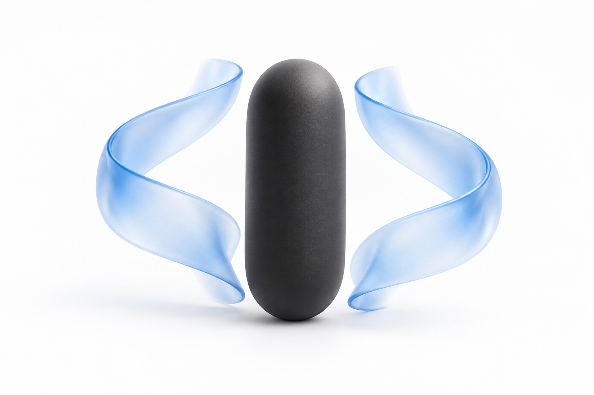
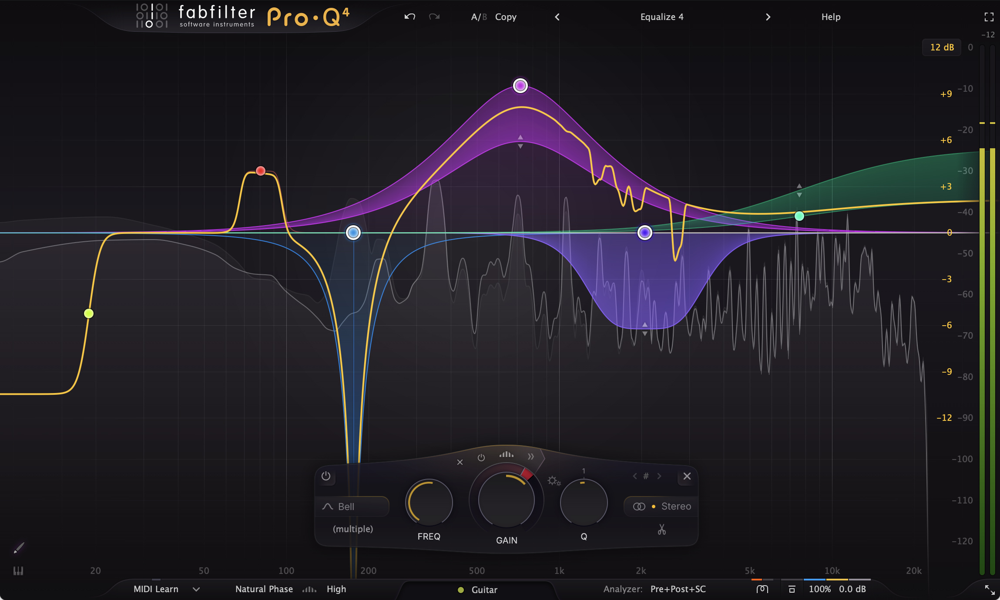
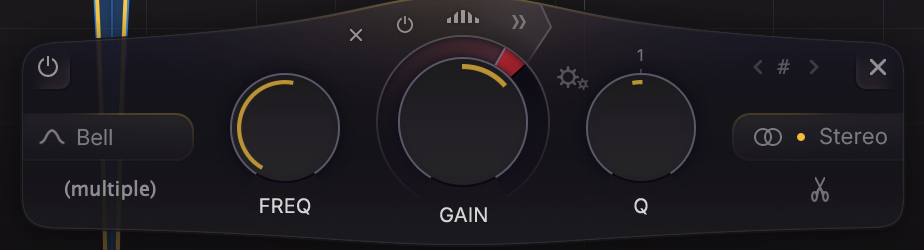
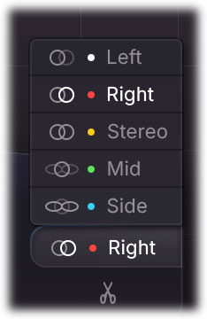

人声空间 · M/S EQ
01 / 07
人声一加空间，
中频就糊了？
先查效果返回，再决定要不要收窄。
AI 概念插画 · 不是声场测量
静音 Reverb / Delay 返回后，
臃肿感明显减轻？先从湿声查起。
“臃肿”不等于“宽度过大”。
只有多余中频主要在 Side，才考虑收一点。
诊断为试听建议 · 机制与操作见后页
人声空间 · M/S EQ
02 / 07
先分清：多了，还是宽了？
先静音／恢复 Return，再降低返回电平。
已经清楚，就不必强行加入 M/S。
仍然偏厚？用 Mid / Side 辅助定位
Mid 和 Side 都厚
先试 Stereo EQ
或减少湿声
主要是 Mid 厚
检查湿声 Mid
与干声的叠加
Side 中频铺得太满
再试 Side
频段衰减
Solo 只帮助定位，决定要回到整段混音。
Pro-Q 的 Band Solo 不等于全频 Mid / Side Solo。
试听诊断 · FabFilter Pro-Q 4 Help：Solo
人声空间 · M/S EQ
03 / 07
EQ 放在效果器之后
干声直达混音；只处理生成后的湿声。
常规并行效果链 · 信号流示意
人声轨
Dry 直达
混音汇合
Send
Reverb / Delay
100% Wet
M/S EQ
只处理目标 Side 频段
Return
放在效果器前的 EQ，
不保证等价于处理最终湿声。
共享 Return 会一起改变其他声源。
需要只改人声时，使用独立返回。
路由：Ableton Live 12 Manual · 常规并行 Wet 100%
人声空间 · M/S EQ
04 / 07
Side 不是“两边的乐器”
Mid 是左右的和，Side 是左右的差。
MID · 和信号
SIDE · 差信号
M = (L + R) / 2
S = (L − R) / 2
Mid 保持不变
只处理 Side
目标频段衰减
重新解码
L′ = M + S′
R′ = M − S′
减少该段左右差分，常可让这一段更收拢。
不代表提取或单独处理“两侧的乐器”。
本文用 1/2 编码约定，并非插件内部缩放声明。
实际听感还取决于原始 M/S 比例、相位与素材。
M/S 定义参考 Voxengo MSED · 公式为教学约定



人声空间 · M/S EQ
05 / 07
Pro-Q 4：选中这个 Side
在立体声 Return 建立 Bell，
打开频段右侧的 stereo placement 菜单。
FabFilter Pro-Q 4
官方示例界面
原图参数、频谱不是
推荐设置或本文实测。
频段控制区：FREQ · GAIN · Q · stereo placement
这里选择 Side
图中当前选中 Right；
箭头仅定位 Side，未显示已设置。
这是单频段范围，
不是整条返回的全频 Width。
Mono 实例没有这些立体声选项。
© FabFilter · 官方 Press Area / Pro-Q 4 Help
人声空间 · M/S EQ
06 / 07
先小幅削，不要一刀切
试听起点，不是官方推荐或最佳值。
Side · Bell
400 Hz −2 dB Q 1.0
按素材移动频点、改变带宽与衰减量。
另一个计算例：Side 衰减 −3 dB
Mid 保持
100.0%
Side 处理前
100.0%
Side 处理后
70.8%
各条以自身处理前幅度为 100%；共用幅度尺度。
10^(−3/20) ≈ 0.708；这是幅度，不是宽度。
此 −3 dB 计算例，与上方 −2 dB 试听设置不同。
上方：试听建议 · 下方：独立计算示意，非实测
人声空间 · M/S EQ
07 / 07
收窄之后，还要过三关
01
Stereo
字头更清楚吗？尾声仍自然吗？
没有更好，就撤回。
02
Mono
按 DAW 合并单声道；
检查音色与平衡，不是只听左声道。
03
整段
主歌、副歌、句尾都复核；
共享返回上的其他声源也要听。
为什么 Mono 可能听不出变化？
(L′ + R′) / 2 = M
理想纯 Side EQ 不改 Mid。
限无额外增益、非线性或后级变化。
Mono 检查不能单独证明“去糊成功”。
数学推导 + 听音验收 · 不构成实测效果承诺